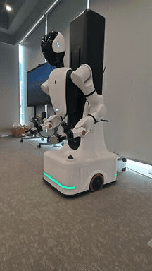

R1 Pro · 轮式双臂 VLN 实验平台
我将上游 MiniCPM-RobotTrack 迁移到轮式双臂平台的本体 GPU，在独立环境中检查实采图像回放、历史窗口与会话重置，并梳理差速底盘接口。当前验证的是保存图像的本体推理，尚未接入实时传感器与运动闭环。
技术细节
部署与回放：核对 179 个源码及模型文件的 SHA-256；将 32 帧实采头部相机图像保存后，在本体 RTX 4090 Laptop GPU 上回放。34 次检查覆盖轨迹输出、31 帧历史窗口与两次会话重置，并非导航成功次数。
验证边界：八点预测轨迹仅写入文件，推理测试未创建 ROS 运动发布器。相机到机身 TF、控制权归属、深度距离约束与失效停车仍需联调；平台移动与姿态视频不代表模型自主导航。